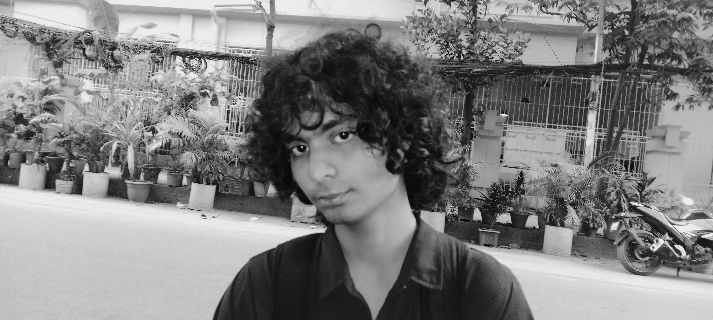

I am Wriddha Nafi Kibria, and I am currently majoring in a Computer Science Degree at BRAC University. I am from Dhaka, Bangladesh. I grew up here, and I always had a passion for art. My goal for the near future is to become a Web Developer. As someone who likes playing with visuals, I want to build websites that are not only functional, but also beautiful and pleasant enough to capture the attention of anyone who is viewing them

Education:
Sunnydale School (2003-2022)
BRAC UNIVERSITY (2022 - Ongoing)
Bachelor in Computer Science
Work Experience
Teaching Assistant at Zenith Coaching Center (2022-2023)
Skills
I know basic Python and HTML
Awards
Daily Star Award (2022)
An award granted to students if they get A and above in all subjects in their A Levels.